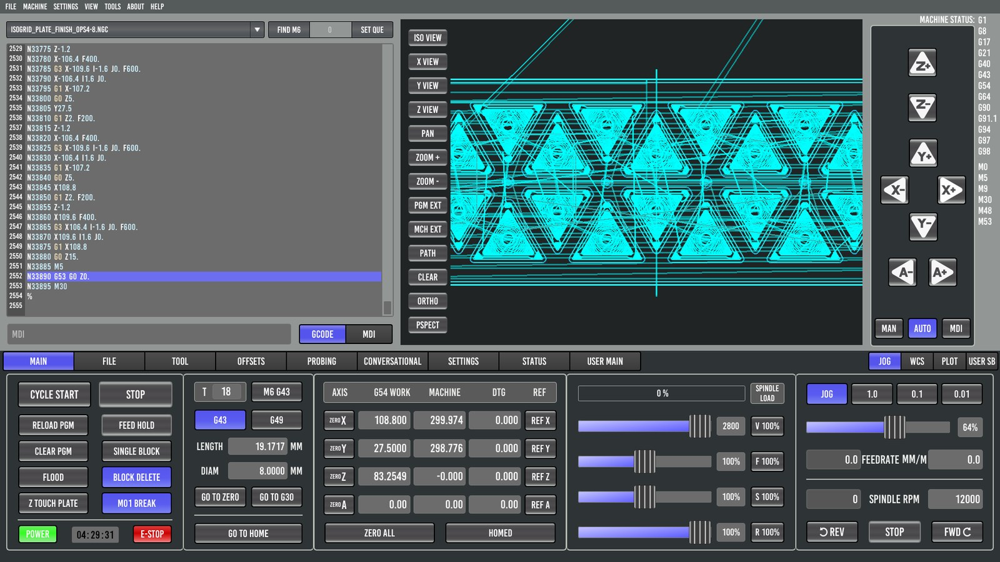
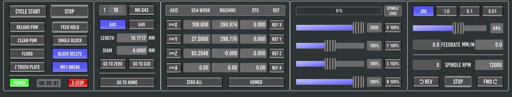
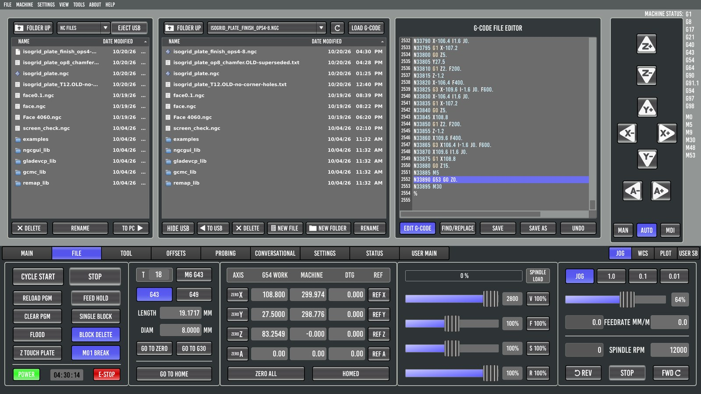
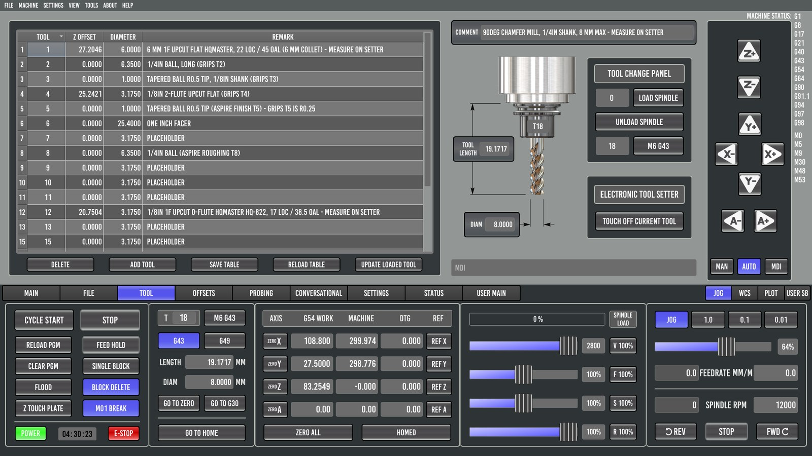
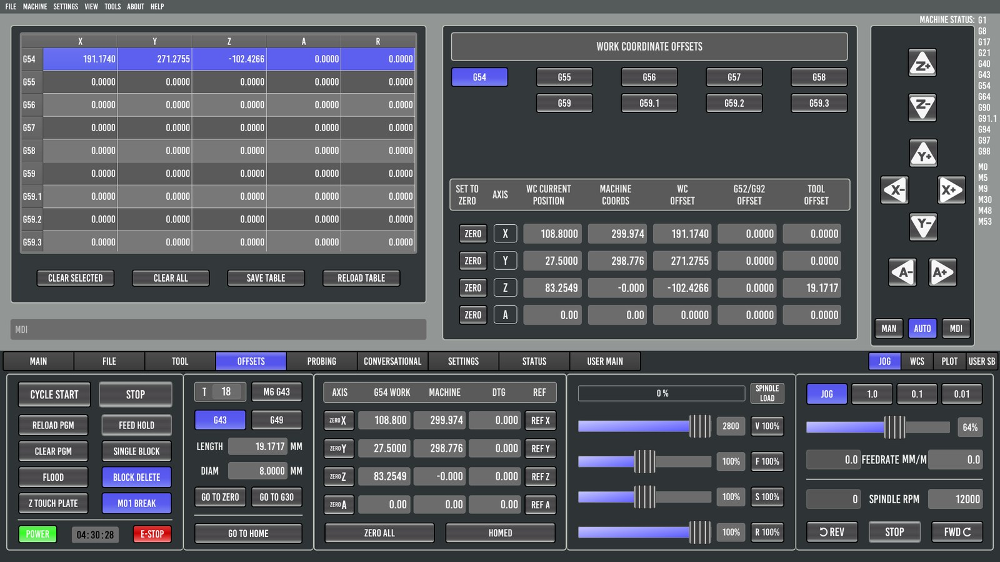
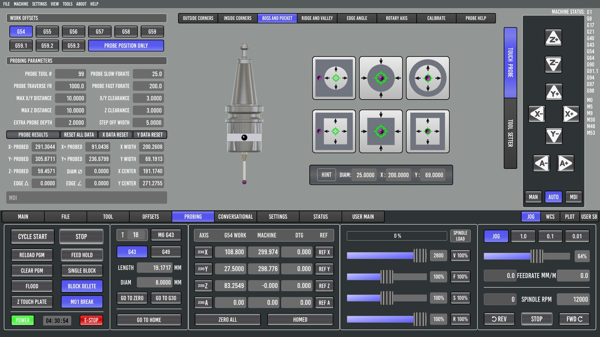
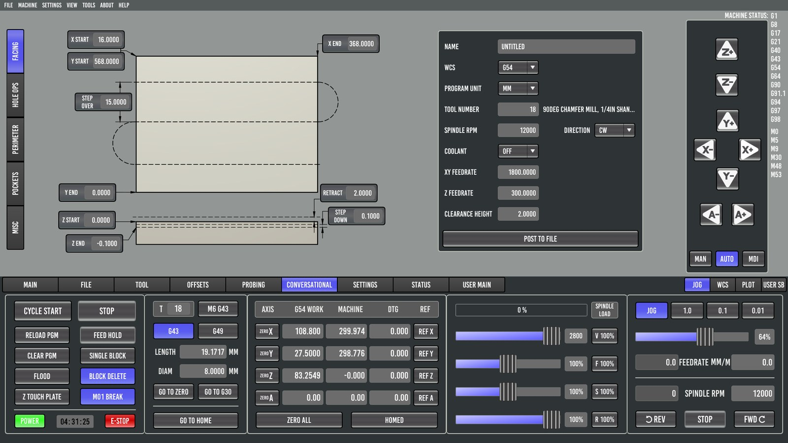
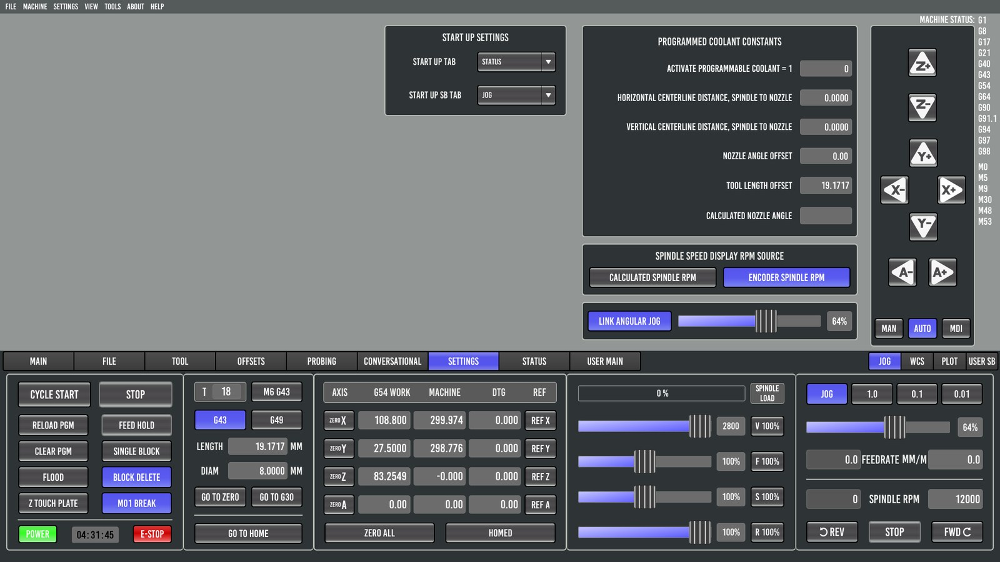
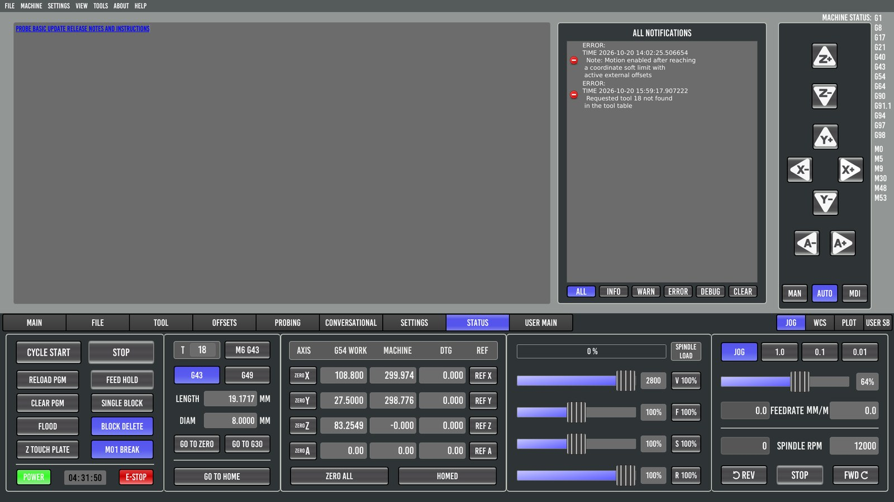

2. A tour of the screen

Probe Basic's window has three parts:
- The upper area changes with the tab you pick in the tab bar: MAIN, FILE, TOOL, OFFSETS, PROBING, CONVERSATIONAL, SETTINGS, STATUS, plus USER MAIN (and ATC, when enabled).
- The right column is the same on every tab: jog arrows for each axis, the MAN / AUTO / MDI mode buttons, and MACHINE STATUS. MACHINE STATUS lists the active G and M codes (G54, G43, G90 and so on), which is handy for checking that G43 is really on.
- The control strip along the bottom never changes. It holds everything you need while a program runs.
The bottom control strip

Learn this strip first. From left to right:
Program control
| Button | What it does |
|---|---|
| CYCLE START | Runs the loaded program, or resumes after FEED HOLD or an M1 pause. It is greyed out until the machine is on, homed and idle, with a program loaded. |
| STOP | Aborts the program. You lose your place. |
| RELOAD PGM | Re-reads the program file from disk. Use it after editing or re-posting the file. |
| FEED HOLD | Freezes motion and keeps your place. The spindle keeps running. CYCLE START continues; while paused, a blinking RESUME shows. |
| CLEAR PGM | Unloads the program. |
| SINGLE BLOCK | When lit, each CYCLE START runs one line. |
| FLOOD | Flood coolant on/off. |
| BLOCK DELETE | When lit, lines starting with / are skipped. |
| Z TOUCH PLATE | On the 6040: a custom user button that runs the touch-plate Z zero (touch_plate.ngc). Stock Probe Basic has MIST here. |
| M01 BREAK | When lit, the program pauses at every M1 (optional stop). Fusion 360 puts one before tool changes. |
| POWER | Machine on/off, green when on. Toggling it also makes Probe Basic re-check its state. |
| Timer | Running time of the current program. |
| E-STOP | Software E-stop: red = OK, grey = E-stopped. Your physical E-stop button always overrides it. |
Tool panel
| Item | What it does |
|---|---|
| T box + M6 G43 | Type a tool number and press it: tool change to that tool, then apply its length. Use it to load the probe (T99). |
| G43 / G49 | Tool length offset on/off. The lit one is active. |
| LENGTH / DIAM | Length and diameter of the tool in the spindle, from the tool table. |
| GO TO ZERO | Lifts Z, then moves to work X0 Y0. |
| GO TO G30 | Moves to the stored G30 position (the tool-setter position). |
| GO TO HOME | Moves to machine home. |
Position readout (DRO)
| Column | Meaning |
|---|---|
| ZERO X / Y / Z / A | Makes the current position zero in the active work offset. It moves your work zero. |
| G54 WORK | Position relative to the part. With G43 on, that is the tool tip. The header shows the active offset. |
| MACHINE | Absolute machine position. |
| DTG | Distance to go in the current move. |
| REF X / Y / Z / A | Homes that axis. |
| ZERO ALL | Zeroes all axes at the current spot. |
| REF ALL / HOMED | Homes everything, then reads HOMED. |
Overrides
The top bar is SPINDLE LOAD. Below it are four sliders, each with a button that snaps it back to 100 %:
| Slider | Effect |
|---|---|
| V | Maximum velocity for all moves. The number shows the limit in mm/min (2800 on the reference machine). |
| F | Feed override: scales every cutting feed. Turn it down for the first plunge of a new program. |
| S | Spindle speed override. |
| R | Rapid override. |
Jog and spindle (right)
- JOG turns keyboard and on-screen jogging on. 1.0 / 0.1 / 0.01 pick a step size; with none lit, jogging is continuous.
- The slider sets the jog speed, as a percentage of maximum.
- FEEDRATE MM/M: actual feed on the left, programmed F on the right.
- SPINDLE RPM: actual rpm on the left, commanded S on the right. On the reference machine, actual rpm is read from the VFD over Modbus.
- REV / STOP / FWD run the spindle by hand.
At the right end of the tab bar, JOG / WCS / PLOT / USER SB switch this small panel between jog controls, work-offset buttons, preview options and user buttons.
The tabs
MAIN
The program listing (left), the 3D toolpath preview (center) and the right column. Along the top of the listing:
- FIND M6 finds tool changes in the program.
- The line-number box and SET QUE are for run from line.
GCODE / MDI switch the left panel between the program and the MDI keypad, history and queue. Preview buttons: ISO / X / Y / Z VIEW, PAN, ZOOM ±, PGM EXT (fit the program), MCH EXT (fit the machine), PATH and CLEAR (the live tool trail), ORTHO / PSPECT.
Run from line doesn't replay what came before that line: position, feed, work offset, tool, tool length, spindle. Start only at the beginning of an operation, where the program sets all of those itself.
FILE

Two file browsers, for USB on the left and the PC's nc_files on the right, with LOAD G-CODE, TO PC / TO USB, NEW FILE / NEW FOLDER / RENAME / DELETE. The right side is a G-code editor: EDIT G-CODE, FIND/REPLACE, SAVE, SAVE AS, UNDO.
TOOL

The tool table on the left; chapter 7 covers it. On the right:
- the selected tool's picture with its length, diameter and comment,
- the TOOL CHANGE PANEL (a tool number + M6 G43; LOAD/UNLOAD SPINDLE are for ATCs),
- ELECTRONIC TOOL SETTER → TOUCH OFF CURRENT TOOL (chapter 6).
OFFSETS

All nine work offsets, plus a breakdown of the current position. See chapter 4.
PROBING

The probing suite, with two vertical sub-tabs on the right edge: TOUCH PROBE and TOOL SETTER.
- Left column: work-offset selection, PROBE POSITION ONLY, the probing parameters and PROBE RESULTS.
- Pages across the top: OUTSIDE CORNERS, INSIDE CORNERS, BOSS AND POCKET, RIDGE AND VALLEY, EDGE ANGLE, ROTARY AXIS, CALIBRATE, PROBE HELP.
See chapters 5 and 6.
CONVERSATIONAL

Generates simple programs from a form. The vertical sub-tabs on the left are FACING, HOLE OPS, PERIMETER, POCKETS and MISC. See chapter 9.
SETTINGS

Startup tab, programmable coolant constants, the spindle-rpm display source (calculated or encoder), and the angular-jog link.
STATUS

ALL NOTIFICATIONS: every error and message with its time, with filters for INFO / WARN / ERROR / DEBUG. Look here first when something "did nothing". On the reference machine it showed the "Requested tool 18 not found" error with its exact time, which led to the cause.
USER MAIN
An empty tab for your own panels (user_tabs/ in the config).